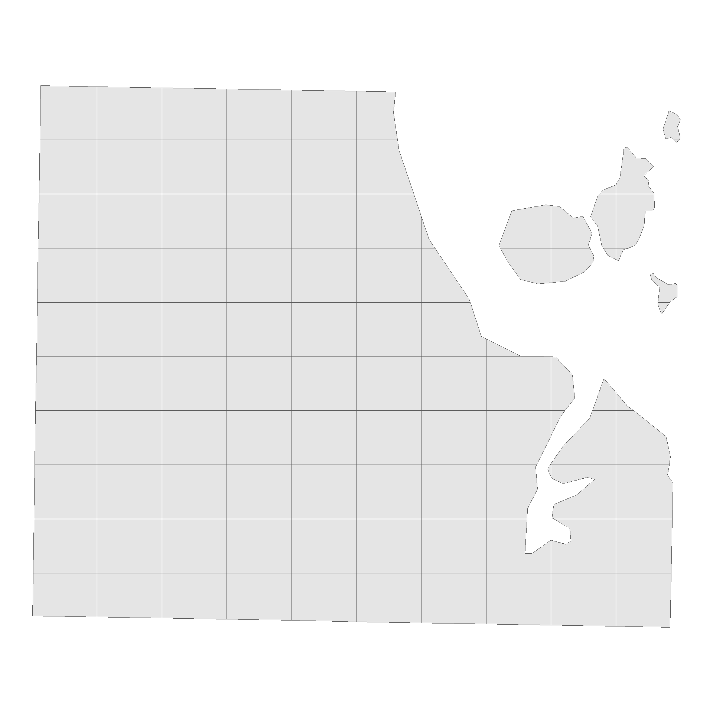
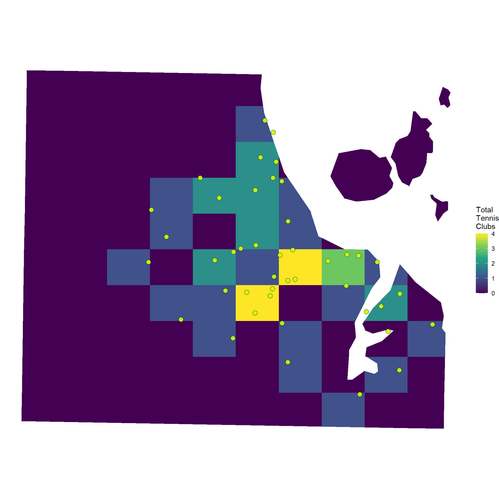
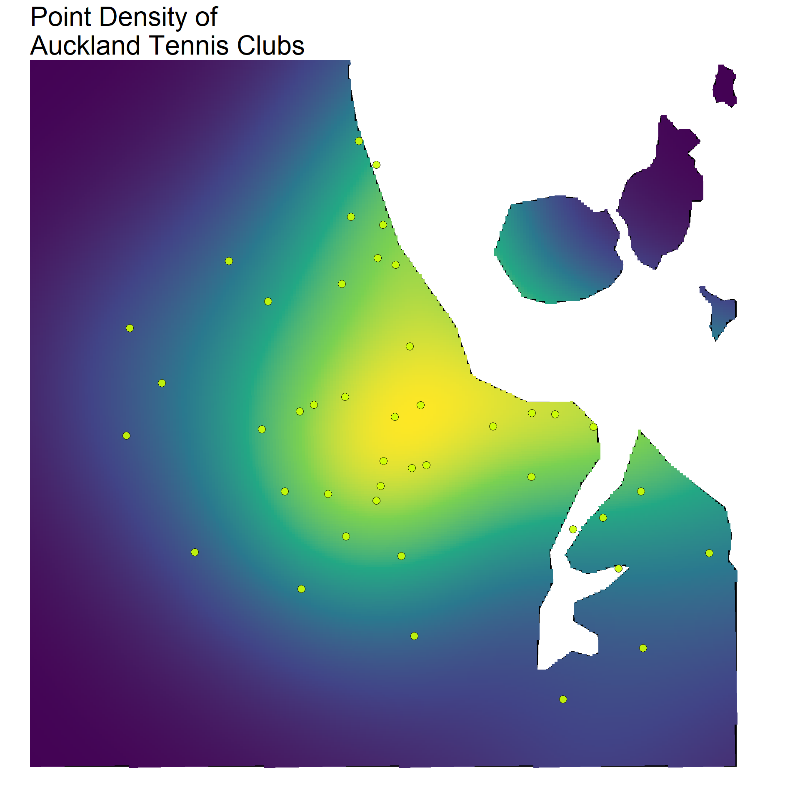

library(here)
library(dplyr)
library(reactable)
df <- read.csv(here("inputs","tennis","tennis_coords.csv"))
#We know the geocoding failed on some addresses, so we'll exclude those
df_clean <- df |>
filter(!is.na(latitude) | !is.na(longitude))
df_clean |>
head() |>
reactable()Third Set: Point Density Mapping
R
Geospatial
New Zealand
In this post, I look at how you can use density functions to make a heat map of Tennis courts locations in Auckland, New Zealand.
Point Density Heat Maps
In a previous post I outlined how we can take a set of addresses scraped from Tennis NZs website and geocode them to get latitude and longitude coordinates. Following this, we can carry out various forms of additional analysis (such as mapping drive distances.
In this next post, I’ll show you how you can take any set of points with coordinates, and make a heat map across an area showing the density of points. This post is heavily inspired by work carried out by Andrew Heiss, check out his work here. the following post is very much an adaptation of his work!
Using density functions, we can visualise hot and cold spots across our desired area. In our case, we will be using the density point maps to understand which areas of Auckland have the greatest/least number of tennis clubs. As a first step, we’re going to load up the tennis club data. The code below will load our data in. For information on how this data was orinally source, see my post on webscraping and geocoding!
Mapping
To map our data, we will just need a shapefile with the map for Auckland, and the data with the coordinates of the tennis clubs in that area. We’ll load that up now.
Load the shape file for Auckland Central.
This is will be our map layer, showing where Auckland is.
library(sf)
library(stringr)
nz_sf <- read_sf(here("inputs", "shapefiles", "NZ_res01.shp"))
# Get the coordinates for Auckland in WGS84
auckland_coords <- matrix(
c(
174.5, -37.0, # min x, min y (SW corner)
174.95, -37.0, # max x, min y (SE corner)
174.95, -36.7, # max x, max y (NE corner)
174.5, -36.7, # min x, max y (NW corner)
174.5, -37.0 # closing point (SW corner)
),
ncol = 2,
byrow = TRUE
)
# Create a POLYGON from the bounding box and set CRS to WGS84
auckland_polygon <- st_polygon(list(auckland_coords)) |>
st_sfc(crs = 4326)
auckland_sf <- nz_sf |>
# Intersect the Auckland shapefile with the Auckland bounding box
st_intersection(auckland_polygon) |>
st_transform(crs = 2193) 2: We need to get our tennis club location data
We’ll need to make sure it’s in the same format and CRS.
#clean point df and put to sf
point_sf <- df_clean |>
st_as_sf(
coords = c("longitude", "latitude"),
crs = 4326
)
point_sf_auckland <- point_sf |>
st_intersection(auckland_polygon) |>
st_transform(crs = 2193) As mentioned in Andrew Heiss’s blog post, we need to ensure that the coordinate reference system is one that uses metres. This is why I’ve set each of sf objects to have crs 2193 (New Zealand Transverse Mercator (NZTM)).
Density by Grids
Now we have our base map and the tennis location data, we can look at visualising our point density. There’s a couple of useful ways we can show this data. The first will look at gridding the Auckland region up in to areas of equal size.
First up, we will split our map of Auckland into a 10X10 grid using the code below, and trim our grid so it only includes sections that overlap the auckland area. To accomplish this, we’ll use the st_intersection function.
library(ggplot2)
#Split Auckland into a 10X10 Grid
auckland_grid <- auckland_sf %>%
st_make_grid(n = c(10, 10))
auckland_grid_map <- st_intersection(auckland_sf, auckland_grid) %>%
st_as_sf() %>%
mutate(grid_id = 1:n())
ggplot() +
geom_sf(data = auckland_grid_map) +
theme_void()
We can then fill each section of the grid according to the number of points that fall within each section.
club_per_grid_box <- auckland_grid_map %>%
st_join(point_sf_auckland) %>%
group_by(grid_id) %>%
summarise(total = sum(!is.na(storepoint_address)))
ggplot() +
geom_sf(data = club_per_grid_box, aes(fill = total), color = NA) +
geom_sf(
data = point_sf_auckland,
color = 'black',
fill="#ccff00",
shape=21,
size=3,
alpha=0.9
) +
scale_fill_viridis_c("Total\nTennis\nClubs", option = "D") +
theme_void() 
Density Gradient
You can see on the previous map that a couple of the grid sections had low values, but were actually quite close to a few tennis clubs. A different way to show the density of points that can account for this is to use a gradient fill. In basic terms, this takes our 10X10 grid and ramps it up. With this, we have a map that fills according to a density, rather than a distinct categorical count for each section. The result will be a map with a smoother looking fill.
library(spatstat)
library(stars)
auckland_ppp <- as.ppp(point_sf_auckland$geometry, W = as.owin(auckland_sf))
density_auckland_stars <- st_as_stars(density(auckland_ppp, dimyx = 300))
auckland_density <- st_as_sf(density_auckland_stars) %>%
st_set_crs(2193)library(ggplot2)
# Plotting
ggplot() +
geom_sf(
data = auckland_sf,
alpha = 1,
fill="black",
colour="black",
linewidth=0.2
) +
geom_sf(
data = auckland_density,
aes(fill = v),
color = NA,
alpha = 1,
linewidth=0.1
) +
geom_sf(
data = point_sf_auckland,
color = 'black',
fill="#ccff00",
shape=21,
size=3,
alpha=0.9
) +
theme_void() +
theme(
legend.title = element_blank(),
legend.spacing = unit(0,"lines"),
legend.position = "none",
legend.text = element_text(size=20),
title = element_text(size=20)
) +
scale_fill_viridis_c(option = "D") +
coord_sf(crs = 4326,
xlim = c(174.6, 174.95),
ylim = c(-37, -36.72)
) +
ggtitle("Point Density of\nAuckland Tennis Clubs")
Both the gridded and density point maps provide a really easy way to visualise hot and cold spots across a map in terms of specific coordinates. In our case, we can clearly see how tennis clubs are clustered around the centre of Auckland, becoming more sparse in the outer suburbs.
Again, I’d like to point to Andrew Heiss’s blog post on this method, he goes into a lot more detail, and makes it super accessible to pick up and adapt the code (as I’ve done here).